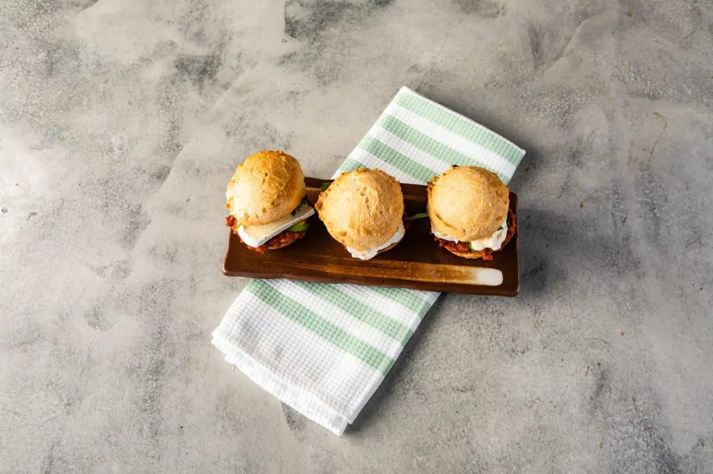

Pancitos de queso

Pancitos de queso
Sandwitchs con diferentes ingredientes
Ingredientes
- leche
- aceite
- huevo
- queso
- almidón de mandioca
- sal
Pasos
- Licuar leche, aceite, huevos, sal, pimienta, queso provolone rallado y mozzarella en cubos hasta unir todo.
- Agregar 1 mitad del almidón de yuca y volver a licuar.
- Bajar la mezcla a un bowl y añadir de a poco incorporando con espátula el resto del almidón.
- Con 2 cucharas acomodar esta masa en muffineras aceitadas levemente.
- Cocinar en horno a 180 ° C por 12 minutos.
Inicio